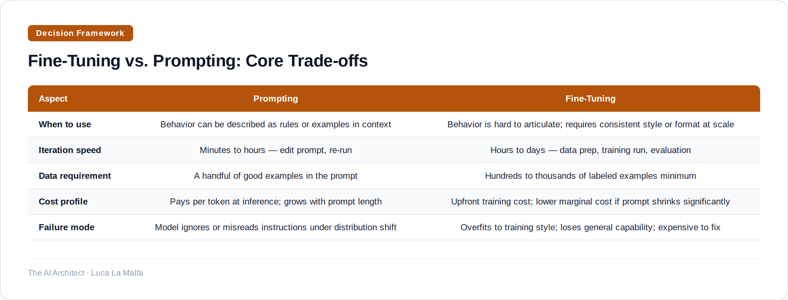
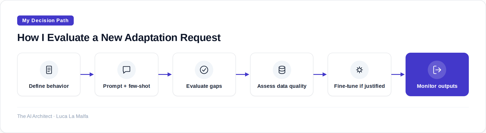

Most teams reach for fine-tuning too early. Here's a systematic way to decide which approach actually fits your problem.
October 27, 2026
There's a decision I see enterprises get wrong constantly: they frame fine-tuning as the "serious" solution and prompting as the quick-and-dirty shortcut. That framing is backwards. Prompting is not a stepping stone to fine-tuning — it's a different tool solving a different class of problem. Conflating them costs time, money, and often produces a worse result than if the team had just written a better system prompt in the first place.
Let me be concrete about what each approach actually changes. A prompt shapes the model's behavior at inference time — it sets context, constraints, tone, format, and task framing. Fine-tuning changes the model's weights — it bakes in patterns that the model should apply without being told. That distinction sounds obvious, but its implications are not. If the behavior you want can be expressed as an instruction, prompting is almost certainly the faster, cheaper, and more maintainable path. Fine-tuning earns its cost when the behavior you want cannot be reliably expressed as an instruction, or when expressing it as an instruction every time is itself the bottleneck.

The honest failure mode of fine-tuning is one that rarely gets discussed openly: it can make a model worse at things it was previously good at. This is called catastrophic forgetting, and while modern techniques like LoRA mitigate it, they don't eliminate it. I've seen teams fine-tune a model to produce tightly structured JSON output, only to discover that the model's ability to reason through edge cases — which they needed for exception handling — had quietly degraded. They had optimized for format at the cost of reasoning quality. A well-crafted prompt with output validation would have given them both.
There's also a data problem that teams consistently underestimate. Fine-tuning requires curated, high-quality labeled examples — not just a dump of historical outputs. If your existing data reflects inconsistent human behavior, edge cases without coverage, or labels that were applied sloppily, you are training the model to reproduce that inconsistency at scale. Garbage in, garbage out applies here more brutally than almost anywhere else in machine learning, because the errors are subtle and the model will confidently reproduce them. Building the dataset is often 70% of the actual work, and it's work that doesn't feel like AI work, which is why it gets underscoped.
So when does fine-tuning actually make sense? I think about three genuine use cases. First: latency and token budget. If your system prompt is 4,000 tokens of instructions and examples that you're paying for on every single call, fine-tuning that knowledge into the model and shrinking the prompt to 200 tokens can be economically justified at high volume. Second: style and voice consistency that resists instruction. Some organizations have a writing style so specific — legal tone, brand voice, regulatory register — that no prompt reliably reproduces it across varied inputs. Fine-tuning on approved outputs is the right call there. Third: task-specific capability that the base model genuinely lacks. If you're doing something narrow and specialized — classifying medical codes, extracting entities in a domain-specific schema — and you have thousands of clean labeled examples, supervised fine-tuning on a smaller model can outperform prompting a much larger one at a fraction of the inference cost.
Outside those three cases, I default to prompting. Not because it's easier (a good prompt for a complex task takes real craft), but because it keeps the system observable and modifiable. When a fine-tuned model misbehaves, diagnosing whether the problem is in the weights, the prompt, or the data pipeline is genuinely hard. When a prompted model misbehaves, you can usually read the prompt, form a hypothesis, and test it in ten minutes. Operational simplicity is underrated in AI system design.

My rule before touching training
I have a personal rule: before any fine-tuning discussion goes further than a whiteboard, the team must show me a prompt-based baseline with at least 50 evaluated examples and a documented failure analysis. Not because I'm skeptical of fine-tuning — I use it — but because that exercise almost always reveals that the problem was underspecified, not that the model needed retraining. We've saved months of work this way. The baseline also gives you something to actually beat, which turns fine-tuning from a leap of faith into a measurable experiment.
anthropics/claude-cookbooks — Examples showing when prompting/tool use suffice vs. when they don't.